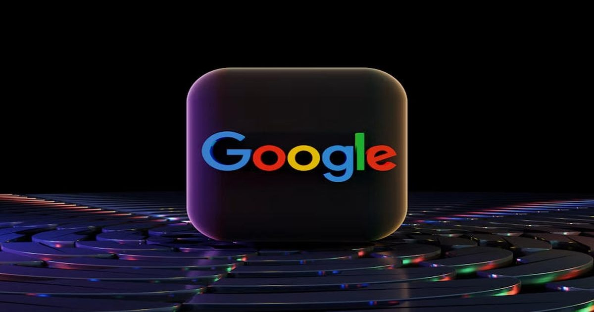

ИИ-бум разогнал поиск Google до максимума за пять лет, а Gemini достиг 1 млрд пользователей — но цена ИИ-бума растёт
Инвестиции в технологии ИИ способствовали значительному увеличению количества поисковых запросов Google, сообщил холдинг Alphabet в финансовом отчёте за III квартал 2026 года.
Выручка Google Cloud более чем удвоилась, а число пользователей Gemini достигло 1 млрд.
Вместе с тем капитальные затраты Alphabet продолжают стремительно расти, оказывая давление на денежный поток.
Источник изображения: BoliviaInteligente / unsplash.com